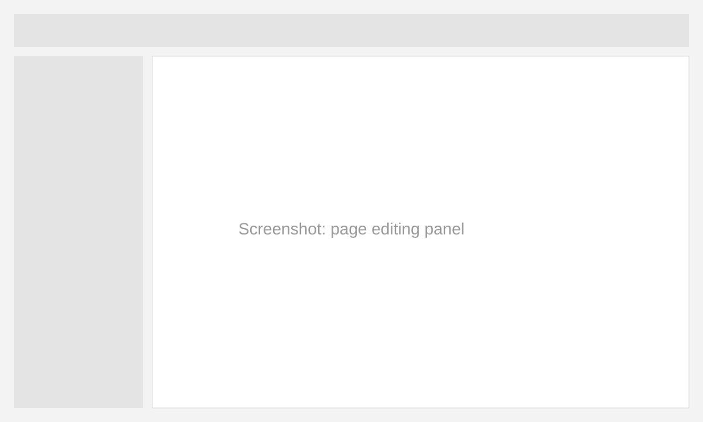
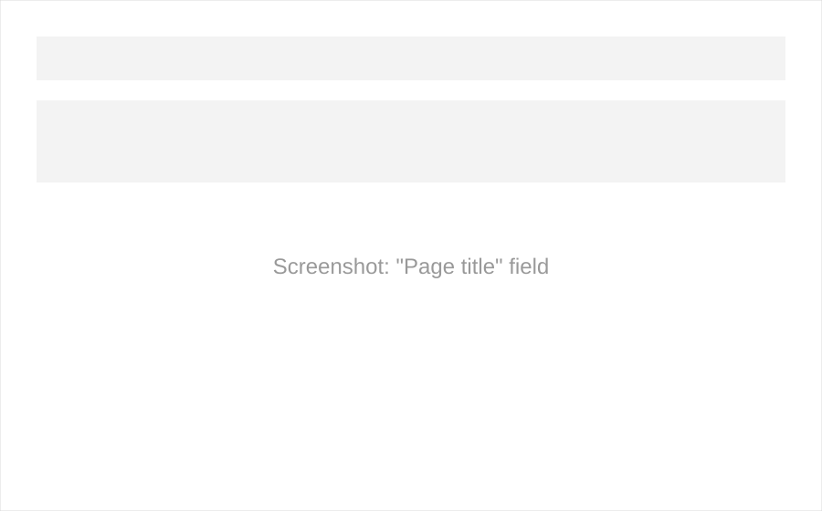

About this document
This guide explains how to edit and publish a page on the site yourself — without a developer's help. It's written for the client-side site administrator.
Section 1
Open the page in the editor
Log in to the admin panel
Follow the link from the "Links" section below and sign in with your credentials.
Open the "Pages" section
In the left menu, select "Pages", then choose the page you need from the list.
Click "Edit"
The button is in the top-right corner of the page card.

General view of the page editing screen
Note
Changes are saved automatically every 30 seconds, but they're only visible to you until published.
Section 2
Edit the content and publish
Edit the title and text
Click on the text block you want to edit — a formatting toolbar will appear. You can change the text, add bold formatting, and insert links directly inside a paragraph. For the page title, use the separate field at the top of the form — it also becomes the browser tab title and is used by search engines when showing a link to the page, so try to keep it short and matching the page's content. If no title is set, the system automatically takes the first words of the main text, which doesn't always look tidy — we recommend always filling in this field manually.
The "Page title" field is located right above the main text. It's required.

Check the result
Click "Preview" to see the page the way visitors will see it.
Publish the page
Click the "Publish" button — the changes will become visible to all site visitors.
The "Publish" button in the top-right corner
Important
Once published, a change can't be undone with a single click — the previous version is kept in history, but it has to be restored manually. Check the text in preview mode before publishing.
| Field | Purpose |
|---|---|
| Page title | Shown in the browser and search results |
| Page URL | The page's address on the site; not recommended to change after publishing |
| Description | Short text for previews on social media and in search |
Before publishing, check:
- The page title is filled in and matches the text
- The text has no typos — checked in preview mode
- All links in the text open and lead to the right pages